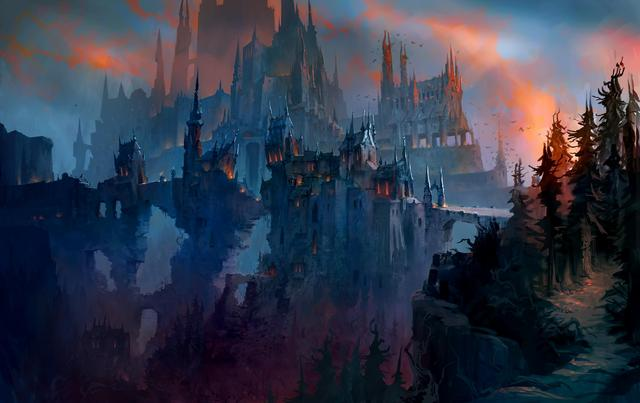

Château Nathria
1.Entrée du raid
2.Calendrier de sortie du raid Château Nathria
- 8/9 Décembre – Difficultés Normal et Héroïque
- 15/16 Décembre – Difficulté Mythique , LFR Aile 1
- 5/6 Janvier – LFR Aile 2
- 19/20 Janvier – LFR Aile 3
- 2/3 Février– LFR Aile 4
3.Stratégies des boss
Après avoir vaincu le premier boss Hurlaile, vous pouvez choisir de nettoyer l'aile des catacombes avec Altimor le Veneur, Destructeur affamé et Dame Inverva Sombreveine, ou vous rendre dans l'aile des quartiers royaux et vaincre Salut du roi-soleil, Artificier Xy'Mox et Le conseil du Sang . Les deux ailes doivent être nettoyées avant que la flèche supérieure avec Fangepoing , les Généraux de la Légion de pierre et le sire Denathrius ne deviennent disponible. Notez que vous combattrez Fangepoing dans la même pièce que Hurlaile.
- Hurlaile
- Altimor le Veneur
- Destructeur affamé
- Artificier Xy'mox
- Salut du roi-soleil
- Dame Inverva Sombreveine
- Le conseil du Sang (à venir)
- Fangepoing
- Généraux de la Légion de pierre (à venir)
- Sire Denathrius (à venir)
4.Loot
Voici les niveaux d'objet des récompenses du raid Château Nathria. Les deux derniers boss déposent un meilleur butin que les autres.
- LFR: Niveau d'objet 187-194;
- Normal: Niveau d'objet 200-207;
- Heroïque: Niveau d'objet 213-220;
- Mythique: Niveau d'objet 226-233.